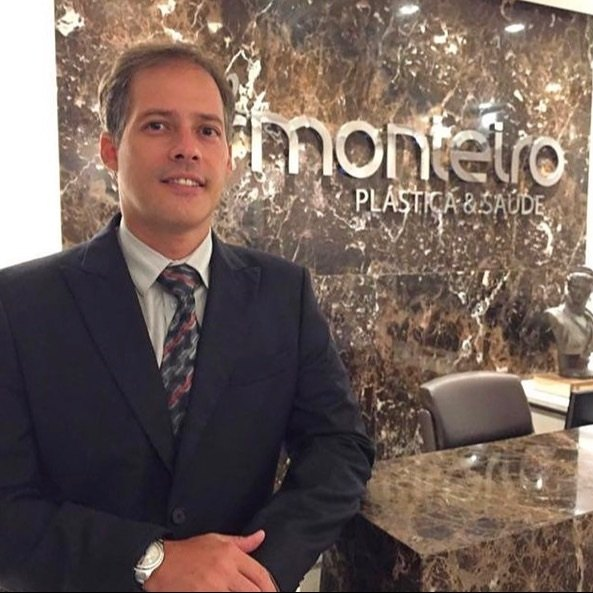

Início · Dr. Humberto
Dr. Humberto Monteiro e a Clínica Monteiro.
Humberto Oliveira Monteiro Dias dos Santos é cirurgião plástico (CRM-BA 15046 · RQE 7995), membro titular da Sociedade Brasileira de Cirurgia Plástica e sócio-administrador da Clínica Monteiro Plástica & Saúde, aberta em 2011. Cada informação desta página tem a fonte ao lado.
Sociedade
Membro titular da SBCP
Na busca pública da Sociedade Brasileira de Cirurgia Plástica, o Dr. Humberto aparece como membro titular, com o CRM 15046. A cirurgia plástica é a especialidade do registro dele: RQE 7995.
No site da clínica, ele assinava assim:
“Membro Titular da Sociedade Brasileira de Cirurgia Plástica · CRM-BA: 15.046 / RQE: 7.995”Assinatura do Dr. Humberto no site da Clínica Monteiro (cópia de outubro de 2024 no Internet Archive)

Diretoria regional
Tesoureiro da SBCP na Bahia (2020/2021)
Na eleição da Sociedade Brasileira de Cirurgia Plástica para o biênio 2020/2021, a diretoria da Regional Bahia teve o Dr. Humberto como tesoureiro:
“REGIONAL BAHIA […] Tesoureiro: HUMBERTO OLIVEIRA MONTEIRO DIAS DOS SANTOS”Página de eleições da SBCP, biênio 2020/2021
A clínica
A Clínica Monteiro Plástica & Saúde
A Monteiro Cirurgia Plástica Ltda., de nome fantasia Clínica Monteiro Plástica e Saúde, foi aberta em 30 de setembro de 2011, segundo a Receita Federal, e tem o Dr. Humberto como sócio-administrador.
Fica no Edf. Master Center, na Av. Adhemar de Barros (hoje Av. Milton Santos), 1156, sala 103, em Ondina. O site da clínica convidava: “Conheça toda a nossa estrutura, feita pensando em você.”

Veja o endereço, o mapa e as fotos da estrutura em Onde atende.
Rede pública
No serviço público
Segundo o CNES, o Dr. Humberto é cirurgião plástico do Hospital Municipal de Salvador desde 2025, com o vínculo registrado na competência de setembro de 2026.
As consultas particulares são agendadas na clínica, em Ondina, pelo WhatsApp (71) 98665-0069.
Vídeos
Vídeos e entrevista
Vídeos da clínica · 2017
Em abril e maio de 2017, o canal “Clínica Monteiro” publicou 15 vídeos curtos sobre procedimentos, como rinoplastia, otoplastia, prótese de mama e lipoaspiração. Ver o canal.
Entrevista · 2026
Em 11 de maio de 2026, o Dr. Humberto foi entrevistado no GAC Rede Podcast, transmitido pelo Burburinho News. Ver a entrevista.
Transparência
Como conferir
- Categoria de membro e áreas de atuação: perfil do Dr. Humberto na busca da SBCP.
- Diretoria da Regional Bahia (2020/2021): página de eleições da SBCP.
- Vínculos hospitalares: consulta de profissionais do CNES.
- Clínica: CNPJ 14.444.976/0001-68, na Receita Federal.
- Registro médico: busca de médicos do CFM.
- Textos e fotos do site antigo: cópia de 2024 no Internet Archive.
Dúvidas frequentes
Perguntas comuns
Qual é o registro do Dr. Humberto?
CRM-BA 15046 e RQE 7995, de cirurgia plástica, como ele assina no site da clínica.
Ele é membro da SBCP?
Sim: membro titular da Sociedade Brasileira de Cirurgia Plástica, segundo a busca pública da Sociedade. No biênio 2020/2021, foi tesoureiro da diretoria da Regional Bahia.
Onde ele atende?
Na Clínica Monteiro Plástica & Saúde, no Edf. Master Center, em Ondina, com hora marcada. Veja Onde atende.
Agende
Uma consulta com o Dr. Humberto, em Ondina.
Atendimento com hora marcada na Clínica Monteiro Plástica & Saúde, Edf. Master Center, sala 103. Fale com a equipe pelo WhatsApp (71) 98665-0069.